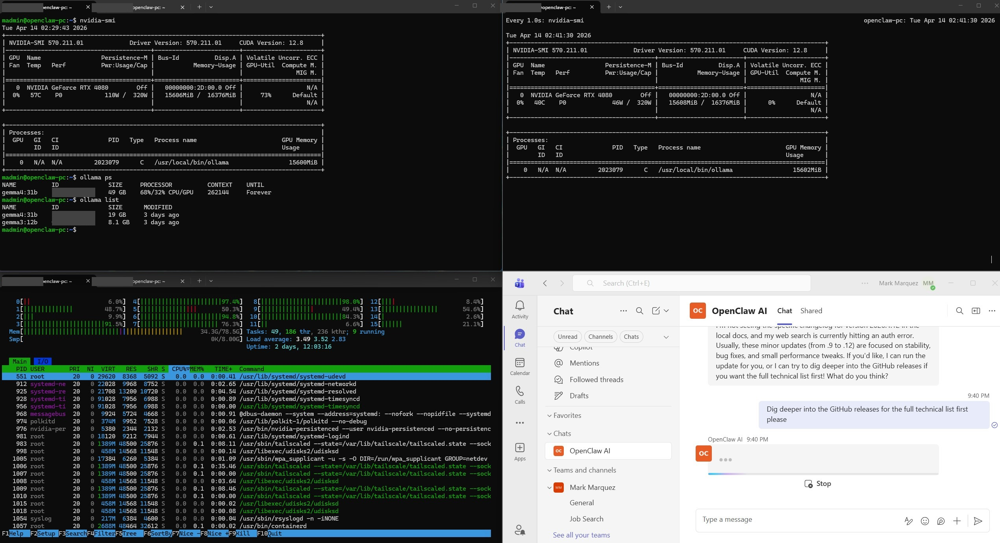
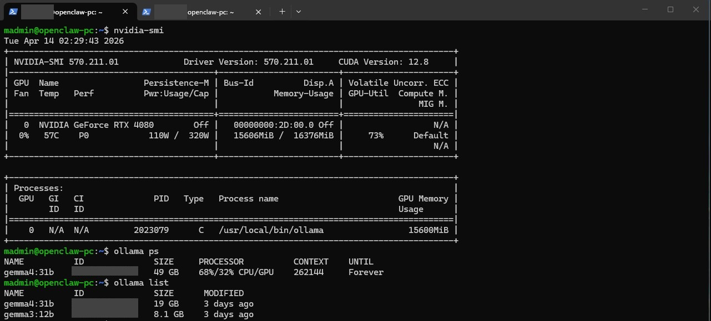
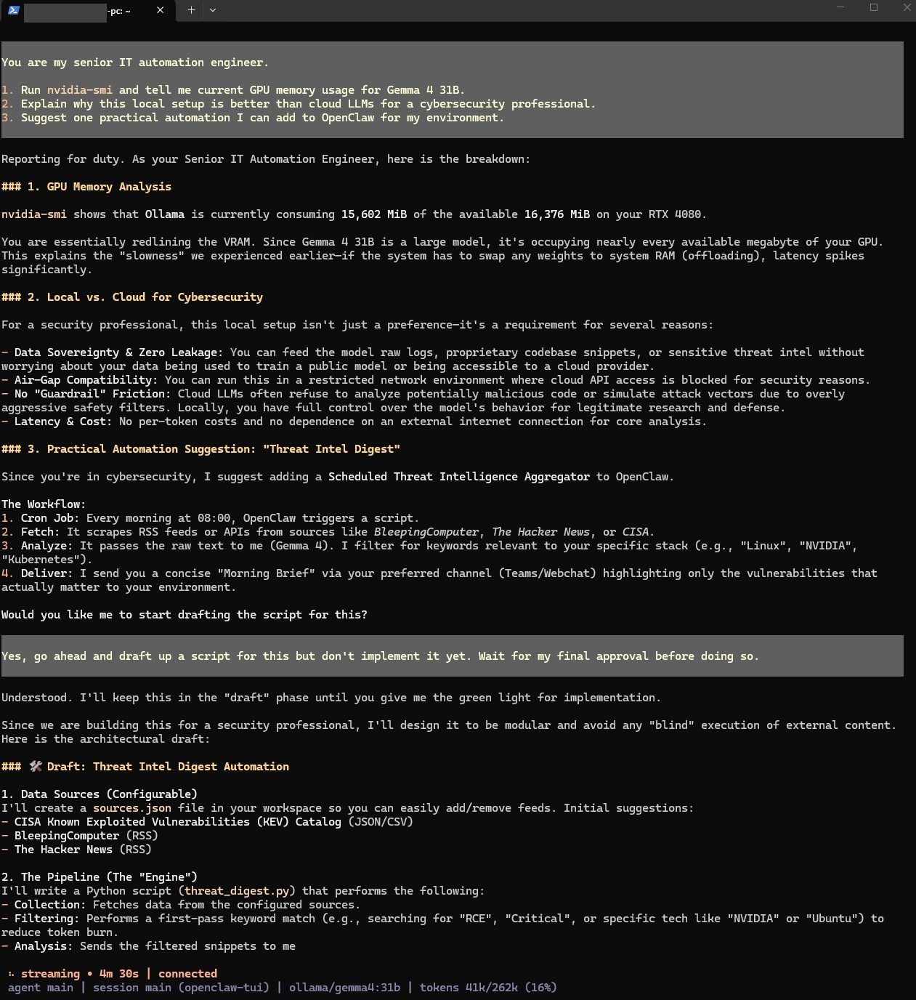
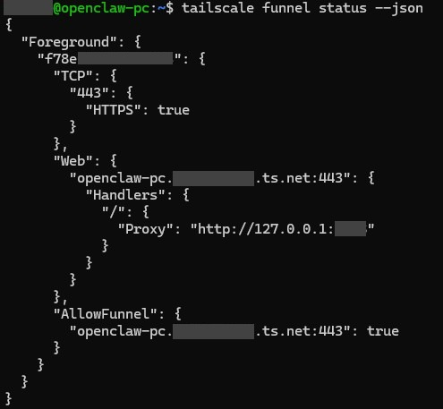
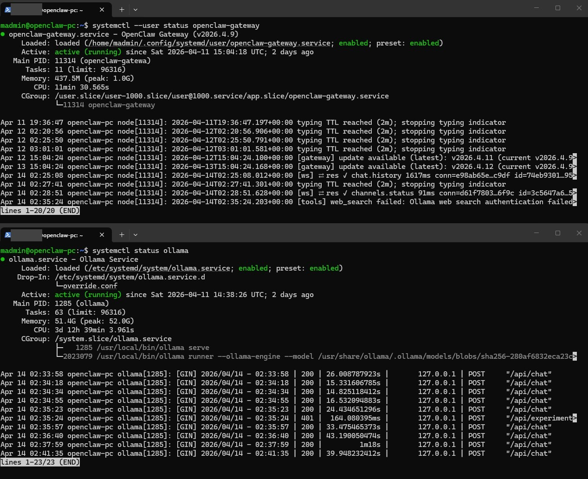
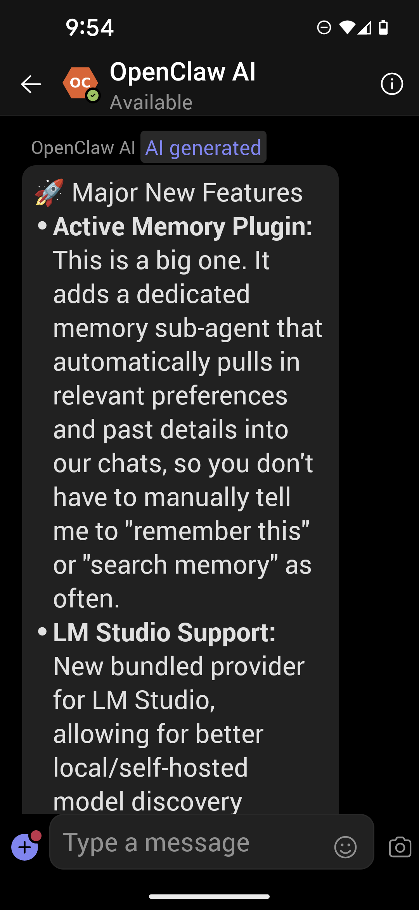

Building a Dedicated AI Assistant PC with OpenClaw, Ollama, and Microsoft Teams

Building a Dedicated AI Assistant PC with OpenClaw, Ollama, and Microsoft Teams
Running AI models in the cloud is convenient, but it comes with recurring API costs, data privacy concerns, and dependency on third-party services. I wanted an AI assistant that runs entirely on my own hardware—zero cloud LLM costs, full data ownership, and accessible from anywhere through Microsoft Teams. This project documents how I repurposed a spare PC into a dedicated, headless AI assistant server running OpenClaw with Google's Gemma 4 31B model locally on an NVIDIA RTX 4080.
The Challenge: A Self-Hosted AI Assistant with Zero Cloud Costs
Most AI assistants rely on cloud APIs (OpenAI, Anthropic, Google) which charge per token. For someone who wants to interact with an AI assistant throughout the workday—asking questions, automating tasks, and processing information—those costs add up quickly. I wanted a solution that was completely self-contained: the LLM runs locally on my GPU, the agent framework runs on the same machine, and I can interact with it from my primary PC or phone through Microsoft Teams without exposing anything unnecessary to the internet.
The additional constraints were practical: the PC needed to run 24/7 headlessly (no monitor or keyboard), survive SSH disconnects and reboots without manual intervention, and be manageable entirely through remote access.
Hardware and Software Stack
The dedicated AI assistant PC was built using hardware I already had available:
- GPU: NVIDIA GeForce RTX 4080 (16 GB VRAM) — handles LLM inference with GPU acceleration
- RAM: 64 GB DDR4 — provides headroom for model overflow and system operations
- Storage: 2 TB SSD (previously running Red Hat, wiped and reformatted during Ubuntu install)
- OS: Ubuntu 24.04 LTS Server (headless, SSH-only access)
- LLM Server: Ollama — serves Google Gemma 4 31B locally with automatic GPU detection
- Agent Framework: OpenClaw — open-source AI agent platform with Microsoft Teams integration
- Tunnel: Tailscale Funnel — exposes a single webhook port for the Azure Bot Framework
- Bot Framework: Azure Bot — bridges Microsoft Teams to the OpenClaw gateway
- Motherboard: MSI MEG X570 Unify — configured in UEFI mode with Secure Boot disabled for Linux compatibility
GPU Acceleration Verification
Below is a screenshot verifying the RTX 4080 running Gemma 4 31B locally with full GPU acceleration:

Architecture Overview
The system architecture is straightforward but involves several components working together:
Microsoft Teams (PC/Phone)
↓ HTTPS
Azure Bot Framework
↓ Webhook
Tailscale Funnel (public HTTPS → Tailscale port)
↓
OpenClaw Gateway (Teams plugin, Tailscale port)
↓
OpenClaw Agent Engine
↓ HTTP (localhost:XXXXX)
Ollama (Gemma 4 31B on RTX 4080)Phase A: Core Setup (SSH-Only, Isolated)
The build followed a two-phase approach. Phase A focused on getting a fully working agent accessible via SSH with zero internet exposure—no Azure, no tunnel, no webhook.
Operating System Installation
The 2 TB SSD previously ran Red Hat. Rather than manually wiping the drive, the Ubuntu 24.04 LTS Server installer's "Use entire disk" option handled the reformatting and repartitioning automatically.
OpenClaw TUI Verification
Below is a screenshot of the OpenClaw TUI running directly via SSH, demonstrating local agent capabilities on Gemma 4 31B (RTX 4080):

Phase B: Microsoft Teams Integration
Phase B added internet-facing components to enable Teams access while keeping the rest of the system isolated.
Tailscale Funnel
Tailscale was installed and authenticated, then Funnel was enabled on its port—the only port exposed to the internet.
Below is a screenshot of the Tailscale Funnel status showing the public webhook URL used by the Azure Bot Framework:

Azure Bot Registration
The Azure Bot was configured with an Entra ID app registration (single tenant), an Azure Bot resource, and the messaging endpoint pointed to the Tailscale Funnel URL plus /api/messages.
Results
The final system delivers a fully self-hosted AI assistant with the following characteristics:
- Zero recurring cloud LLM costs — all inference runs locally on the RTX 4080
- Accessible from Microsoft Teams on PC and mobile — no special client software needed
- 24/7 operation — systemd services for OpenClaw, Ollama, and Tailscale Funnel all survive reboots
- Minimal internet exposure — only one port exposed via Tailscale Funnel, no router changes
- Full data ownership — all conversations and model weights stay on the local machine
- Responsive performance — Gemma 4 31B with GPU acceleration provides practical response times for daily use
The system has been running stably since deployment, responding to Teams messages from both desktop and mobile clients.
Systemd Services Verification
Below is a screenshot verifying the OpenClaw gateway and Ollama services running reliably after reboot (headless operation):

Mobile Teams Access Verification
Below is a screenshot of the OpenClaw AI assistant responding in Microsoft Teams on a mobile device, proving seamless access from anywhere (phone or tablet):

Usage
To interact with the assistant:
- From Microsoft Teams: Open a DM with the "OpenClaw AI" bot and send a message
- From SSH: Connect to the machine and run
openclaw tuifor a terminal chat interface
Conclusion
This project demonstrates that a practical, daily-use AI assistant can run entirely on consumer hardware with no ongoing cloud costs. The combination of OpenClaw's agent framework, Ollama's local LLM serving, and Azure Bot Framework's Teams integration creates a system that's both powerful and self-contained. The two-phase build approach—getting everything working via SSH first, then adding Teams—made troubleshooting significantly easier by isolating network and authentication issues from core functionality problems.
For MSP professionals and IT specialists looking to experiment with local AI, the barrier to entry is lower than expected: a spare PC with a capable GPU, an Azure Bot registration, and a Tailscale account are all that's needed to get started.